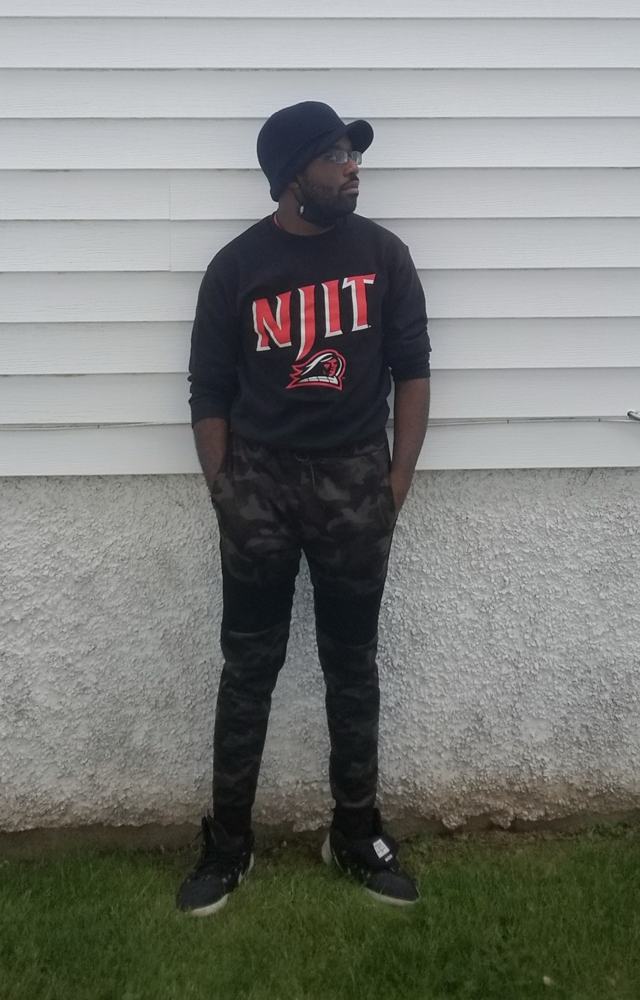

Emmanuel Obiora (oh-bee-are-uh) Chiobi (chi-oh-bee) Jr. is a 21 year old African-American music, film and game enthusiast who has interests in graphic design, competitive gaming, filmmaking, music production, programming, and web / app development. He currently attends the New Jersey Institute of Technology (NJIT) as a fourth-year Information Technology major. After college, he wishes to pursue a career in full-stack development.
Born on May 16th, 2000, he was raised alongside two older sisters primarily in Union Township, Union County, New Jersey. Going to regular public schools within the area, he initially developed an interest in artwork, believing he would pursue a career as an illustrator. After being exposed to video games and computers, he started to stray away from wanting to be an illustrator and focused more on technology. Now, he develops small coding projects to let the time go by. Along with that, he works on content that he publishes online under the moniker of "SMUS16475", a username he developed at the age of 11.